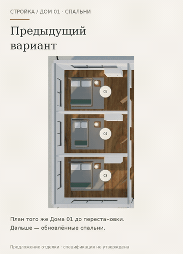

Спальни: расстановка и ракурсы
Две кровати развёрнуты, третья придвинута изголовьем к глухой перегородке. Подушки, покрывала, тумбы и свет перенесены согласованно. Начальные ракурсы показывают кровати.
Открыть анимированную GIF-версию · Сравнение «было / стало» крупно
Если видео не открывается — показать GIF здесь

Открыть интерактивный прототип →
Предыдущий этап: комнаты на плане →
Монтаж настоящих экранов: подписанный прежний вариант 20 и текущий прототип 21. Не непрерывная запись движения. Все восемь помещений и девять точек подхода к кроватям доступны геометрически; нормативная эргономика и комплектация требуют согласования. Физический iPhone/Safari не проверен. Рабочий сайт и сервер не менялись.